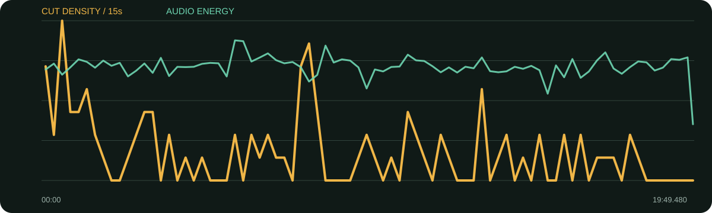

景别 / 机位系统
- 桌边双人关系镜头加双方单人近/中景
- 谈节目历史时切旧节目档案，谈书时切封面/文字卡
- 长段答案允许6秒以上镜头，靠内容而非机械切换
- 后段户外行走/雪景作为空间与情绪收束
整片最强包装集中在前20秒：巨型白/橙字逐句追着观点出现。正文反而变慢，用双人/单人、旧节目档案、书封与引语卡维持20分钟观看，而不是从头到尾轰炸。
口径说明：候选镜头由场景检测生成，闪光、人物快速动作、数字推拉和图形变化都可能误触发；逐秒重点由真实原片、字幕语义和全片总览人工选择。字幕来自本地中文语音识别，人名、品牌名与行业词可能有误，不把自动转写当逐字稿。
| 时间 | 章节 | 内容推进 | 剪辑任务 |
|---|---|---|---|
| 00:00–00:24 | 巨型花字冷开场 | 教育缺失与被期待的人生。 | 大字逐句推进，快速建立核心矛盾。 |
| 00:24–04:05 | 康熙关系与节目机制 | 蔡康永和小S的互补、节目为何难复制。 | 访谈与旧节目档案交替。 |
| 04:05–08:00 | 退出聚光与衰老 | 生命阶段、老人、鼓励与对衰老的恐惧。 | 镜头放慢，让复杂态度完整。 |
| 08:00–12:00 | 懒人如何活得好 | 书籍、搞定自己、接受失落与被看见的变化。 | 书封/引语卡分章，论点更清晰。 |
| 12:00–16:00 | 教育缺失与审美妥协 | 死亡教育、成功定义、畅销与严肃创作。 | 长答案中穿插文字证据和反应。 |
| 16:00–19:49 | 传播时代与作者消失 | 影响力、时代策略、三分钟解说与创作者被淡化。 | 从室内观点走向户外/雪景，形成余韵。 |
档案是核心：康熙旧节目、人物资料、书籍/封面、评论/引语卡和户外画面分别承担历史、证据、章节与收束功能。
综合音轨显示长片整体能量平稳；开场高信息段与后段户外段的声能差异可在曲线中查看。未做人声/配乐分离，不据此猜配乐旋律或乐器。
每张长图从左到右为真实的连续秒点。重点不是记住截图，而是看清一组画面怎样“进入—完成任务—退出”。
画面事实白/橙巨字覆盖画面，按语义单元推进。
怎么复现每屏只保留一个核心判断，强调词用单一强调色。
画面事实多个“没有”形成排比和视觉节奏。
怎么复现排比句适合逐项出现，保持相同基线与字重。
画面事实从列举切到结论，字号/布局变化形成升级。
怎么复现结论屏不要继续列举，应留更大空白。
画面事实高强度包装停止，双人/单人让观众进入正文。
怎么复现冷开场控制在15—25秒，正文必须降速。
画面事实人物回忆有可见证据，避免纯口述。
怎么复现先听到节目名或人物名，再切档案形成J-cut。
画面事实从人生阶段切到“懒人指南”，物件明确章节。
怎么复现长访谈每6—8分钟需要一次显著视觉章节器。
画面事实空间改变让长片从讨论回到人生感受。
怎么复现结尾B-roll要延续最后观点，不要只放风景。

| 观察项 | 15秒窗口 |
|---|---|
| 视觉最密 | 00:30–00:45（28.0 候选切镜/分）；08:00–08:15（24.0 候选切镜/分）；00:00–00:15（20.0 候选切镜/分） |
| 视觉最缓 | 02:00–02:15（0.0 候选切镜/分）；02:15–02:30（0.0 候选切镜/分）；03:30–03:45（0.0 候选切镜/分） |
| 综合音轨最强 | 05:45–06:00（-15.5 dBFS）；06:00–06:15（-15.8 dBFS）；08:30–08:45（-17.0 dBFS） |
“视觉最密/最缓”基于自动候选切镜；“综合音轨最强”包含人声、环境声、音乐和音效，不能单独当作配乐音量。平均综合音轨为 -22.76 dBFS，最高15秒窗口 -15.53 dBFS，最低15秒窗口 -39.16 dBFS。
| # | 入点 | 出点 | 时长 | 代表帧秒点 | 证据 |
|---|---|---|---|---|---|
| 1 | 00:00.000 | 00:02.120 | 2.12s | 0.750000s | 自动候选 |
| 2 | 00:02.120 | 00:03.120 | 1.00s | 2.570000s | 自动候选 |
| 3 | 00:03.120 | 00:04.480 | 1.36s | 3.732000s | 自动候选 |
| 4 | 00:04.480 | 00:11.480 | 7.00s | 5.230000s | 自动候选 |
| 5 | 00:11.480 | 00:13.960 | 2.48s | 12.230000s | 自动候选 |
| 6 | 00:13.960 | 00:20.720 | 6.76s | 14.710000s | 自动候选 |
| 7 | 00:20.720 | 00:24.520 | 3.80s | 21.470000s | 自动候选 |
| 8 | 00:24.520 | 00:29.200 | 4.68s | 25.270000s | 自动候选 |
| 9 | 00:29.200 | 00:31.320 | 2.12s | 29.950000s | 自动候选 |
| 10 | 00:31.320 | 00:32.800 | 1.48s | 31.986000s | 自动候选 |
| 11 | 00:32.800 | 00:36.160 | 3.36s | 33.550000s | 自动候选 |
| 12 | 00:36.160 | 00:37.920 | 1.76s | 36.910000s | 自动候选 |
| 13 | 00:37.920 | 00:38.120 | 0.20s | 38.010000s | 自动候选 |
| 14 | 00:38.120 | 00:38.400 | 0.28s | 38.246000s | 自动候选 |
| 15 | 00:38.400 | 00:40.600 | 2.20s | 39.150000s | 自动候选 |
| 16 | 00:40.600 | 00:44.600 | 4.00s | 41.350000s | 自动候选 |
| 17 | 00:44.600 | 00:46.880 | 2.28s | 45.350000s | 自动候选 |
| 18 | 00:46.880 | 00:47.480 | 0.60s | 47.150000s | 自动候选 |
| 19 | 00:47.480 | 00:50.080 | 2.60s | 48.230000s | 自动候选 |
| 20 | 00:50.080 | 00:57.880 | 7.80s | 50.830000s | 自动候选 |
| 21 | 00:57.880 | 01:04.520 | 6.64s | 58.630000s | 自动候选 |
| 22 | 01:04.520 | 01:07.800 | 3.28s | 65.270000s | 自动候选 |
| 23 | 01:07.800 | 01:12.520 | 4.72s | 68.550000s | 自动候选 |
| 24 | 01:12.520 | 01:14.080 | 1.56s | 73.222000s | 自动候选 |
| 25 | 01:14.080 | 01:16.280 | 2.20s | 74.830000s | 自动候选 |
| 26 | 01:16.280 | 01:21.280 | 5.00s | 77.030000s | 自动候选 |
| 27 | 01:21.280 | 01:23.200 | 1.92s | 82.030000s | 自动候选 |
| 28 | 01:23.200 | 01:24.560 | 1.36s | 83.812000s | 自动候选 |
| 29 | 01:24.560 | 01:27.720 | 3.16s | 85.310000s | 自动候选 |
| 30 | 01:27.720 | 01:34.280 | 6.56s | 88.470000s | 自动候选 |
| 31 | 01:34.280 | 01:41.960 | 7.68s | 95.030000s | 自动候选 |
| 32 | 01:41.960 | 01:44.120 | 2.16s | 102.710000s | 自动候选 |
| 33 | 01:44.120 | 01:49.720 | 5.60s | 104.870000s | 自动候选 |
| 34 | 01:49.720 | 01:54.800 | 5.08s | 110.470000s | 自动候选 |
| 35 | 01:54.800 | 02:26.360 | 31.56s | 115.550000s | 自动候选 |
| 36 | 02:26.360 | 02:33.240 | 6.88s | 147.110000s | 自动候选 |
| 37 | 02:33.240 | 02:42.520 | 9.28s | 153.990000s | 自动候选 |
| 38 | 02:42.520 | 02:50.520 | 8.00s | 163.270000s | 自动候选 |
| 39 | 02:50.520 | 02:56.760 | 6.24s | 171.270000s | 自动候选 |
| 40 | 02:56.760 | 02:57.360 | 0.60s | 177.030000s | 自动候选 |
| 41 | 02:57.360 | 03:01.520 | 4.16s | 178.110000s | 自动候选 |
| 42 | 03:01.520 | 03:04.160 | 2.64s | 182.270000s | 自动候选 |
| 43 | 03:04.160 | 03:05.760 | 1.60s | 184.880000s | 自动候选 |
| 44 | 03:05.760 | 03:06.840 | 1.08s | 186.246000s | 自动候选 |
| 45 | 03:06.840 | 03:15.760 | 8.92s | 187.590000s | 自动候选 |
| 46 | 03:15.760 | 03:21.280 | 5.52s | 196.510000s | 自动候选 |
| 47 | 03:21.280 | 03:21.880 | 0.60s | 201.550000s | 自动候选 |
| 48 | 03:21.880 | 03:24.480 | 2.60s | 202.630000s | 自动候选 |
| 49 | 03:24.480 | 03:34.880 | 10.40s | 205.230000s | 自动候选 |
| 50 | 03:34.880 | 03:46.240 | 11.36s | 215.630000s | 自动候选 |
| 51 | 03:46.240 | 03:50.160 | 3.92s | 226.990000s | 自动候选 |
| 52 | 03:50.160 | 03:54.360 | 4.20s | 230.910000s | 自动候选 |
| 53 | 03:54.360 | 04:12.120 | 17.76s | 235.110000s | 自动候选 |
| 54 | 04:12.120 | 04:21.520 | 9.40s | 252.870000s | 自动候选 |
| 55 | 04:21.520 | 04:29.960 | 8.44s | 262.270000s | 自动候选 |
| 56 | 04:29.960 | 04:40.480 | 10.52s | 270.710000s | 自动候选 |
| 57 | 04:40.480 | 04:46.920 | 6.44s | 281.230000s | 自动候选 |
| 58 | 04:46.920 | 04:57.520 | 10.60s | 287.670000s | 自动候选 |
| 59 | 04:57.520 | 05:07.280 | 9.76s | 298.270000s | 自动候选 |
| 60 | 05:07.280 | 05:17.600 | 10.32s | 308.030000s | 自动候选 |
| 61 | 05:17.600 | 05:36.680 | 19.08s | 318.350000s | 自动候选 |
| 62 | 05:36.680 | 05:46.200 | 9.52s | 337.430000s | 自动候选 |
| 63 | 05:46.200 | 05:50.480 | 4.28s | 346.950000s | 自动候选 |
| 64 | 05:50.480 | 05:56.720 | 6.24s | 351.230000s | 自动候选 |
| 65 | 05:56.720 | 06:09.680 | 12.96s | 357.470000s | 自动候选 |
| 66 | 06:09.680 | 06:17.840 | 8.16s | 370.430000s | 自动候选 |
| 67 | 06:17.840 | 06:27.680 | 9.84s | 378.590000s | 自动候选 |
| 68 | 06:27.680 | 06:29.680 | 2.00s | 388.430000s | 自动候选 |
| 69 | 06:29.680 | 06:30.760 | 1.08s | 390.166000s | 自动候选 |
| 70 | 06:30.760 | 06:40.600 | 9.84s | 391.510000s | 自动候选 |
| 71 | 06:40.600 | 06:45.240 | 4.64s | 401.350000s | 自动候选 |
| 72 | 06:45.240 | 06:47.720 | 2.48s | 405.990000s | 自动候选 |
| 73 | 06:47.720 | 06:50.160 | 2.44s | 408.470000s | 自动候选 |
| 74 | 06:50.160 | 07:05.040 | 14.88s | 410.910000s | 自动候选 |
| 75 | 07:05.040 | 07:10.360 | 5.32s | 425.790000s | 自动候选 |
| 76 | 07:10.360 | 07:20.120 | 9.76s | 431.110000s | 自动候选 |
| 77 | 07:20.120 | 07:25.920 | 5.80s | 440.870000s | 自动候选 |
| 78 | 07:25.920 | 07:38.240 | 12.32s | 446.670000s | 自动候选 |
| 79 | 07:38.240 | 07:45.640 | 7.40s | 458.990000s | 自动候选 |
| 80 | 07:45.640 | 07:51.320 | 5.68s | 466.390000s | 自动候选 |
| 81 | 07:51.320 | 07:54.120 | 2.80s | 472.070000s | 自动候选 |
| 82 | 07:54.120 | 07:57.120 | 3.00s | 474.870000s | 自动候选 |
| 83 | 07:57.120 | 07:59.760 | 2.64s | 477.870000s | 自动候选 |
| 84 | 07:59.760 | 07:59.960 | 0.20s | 479.850000s | 自动候选 |
| 85 | 07:59.960 | 08:02.200 | 2.24s | 480.710000s | 自动候选 |
| 86 | 08:02.200 | 08:02.400 | 0.20s | 482.290000s | 自动候选 |
| 87 | 08:02.400 | 08:04.360 | 1.96s | 483.150000s | 自动候选 |
| 88 | 08:04.360 | 08:04.560 | 0.20s | 484.450000s | 自动候选 |
| 89 | 08:04.560 | 08:06.160 | 1.60s | 485.280000s | 自动候选 |
| 90 | 08:06.160 | 08:07.960 | 1.80s | 486.910000s | 自动候选 |
| 91 | 08:07.960 | 08:14.960 | 7.00s | 488.710000s | 自动候选 |
| 92 | 08:14.960 | 08:15.560 | 0.60s | 495.230000s | 自动候选 |
| 93 | 08:15.560 | 08:18.160 | 2.60s | 496.310000s | 自动候选 |
| 94 | 08:18.160 | 08:24.480 | 6.32s | 498.910000s | 自动候选 |
| 95 | 08:24.480 | 08:25.720 | 1.24s | 505.038000s | 自动候选 |
| 96 | 08:25.720 | 08:35.880 | 10.16s | 506.470000s | 自动候选 |
| 97 | 08:35.880 | 08:45.240 | 9.36s | 516.630000s | 自动候选 |
| 98 | 08:45.240 | 09:23.040 | 37.80s | 525.990000s | 自动候选 |
| 99 | 09:23.040 | 09:31.080 | 8.04s | 563.790000s | 自动候选 |
| 100 | 09:31.080 | 09:42.520 | 11.44s | 571.830000s | 自动候选 |
| 101 | 09:42.520 | 09:45.680 | 3.16s | 583.270000s | 自动候选 |
| 102 | 09:45.680 | 09:51.120 | 5.44s | 586.430000s | 自动候选 |
| 103 | 09:51.120 | 09:59.240 | 8.12s | 591.870000s | 自动候选 |
| 104 | 09:59.240 | 10:06.240 | 7.00s | 599.990000s | 自动候选 |
| 105 | 10:06.240 | 10:09.080 | 2.84s | 606.990000s | 自动候选 |
| 106 | 10:09.080 | 10:29.480 | 20.40s | 609.830000s | 自动候选 |
| 107 | 10:29.480 | 10:38.560 | 9.08s | 630.230000s | 自动候选 |
| 108 | 10:38.560 | 10:39.880 | 1.32s | 639.154000s | 自动候选 |
| 109 | 10:39.880 | 11:01.360 | 21.48s | 640.630000s | 自动候选 |
| 110 | 11:01.360 | 11:03.520 | 2.16s | 662.110000s | 自动候选 |
| 111 | 11:03.520 | 11:05.240 | 1.72s | 664.270000s | 自动候选 |
| 112 | 11:05.240 | 11:13.000 | 7.76s | 665.990000s | 自动候选 |
| 113 | 11:13.000 | 11:17.400 | 4.40s | 673.750000s | 自动候选 |
| 114 | 11:17.400 | 11:25.400 | 8.00s | 678.150000s | 自动候选 |
| 115 | 11:25.400 | 11:27.800 | 2.40s | 686.150000s | 自动候选 |
| 116 | 11:27.800 | 11:39.200 | 11.40s | 688.550000s | 自动候选 |
| 117 | 11:39.200 | 11:44.360 | 5.16s | 699.950000s | 自动候选 |
| 118 | 11:44.360 | 11:51.320 | 6.96s | 705.110000s | 自动候选 |
| 119 | 11:51.320 | 12:00.000 | 8.68s | 712.070000s | 自动候选 |
| 120 | 12:00.000 | 12:05.680 | 5.68s | 720.750000s | 自动候选 |
| 121 | 12:05.680 | 12:11.680 | 6.00s | 726.430000s | 自动候选 |
| 122 | 12:11.680 | 12:21.440 | 9.76s | 732.430000s | 自动候选 |
| 123 | 12:21.440 | 12:27.600 | 6.16s | 742.190000s | 自动候选 |
| 124 | 12:27.600 | 12:57.600 | 30.00s | 748.350000s | 自动候选 |
| 125 | 12:57.600 | 13:11.720 | 14.12s | 778.350000s | 自动候选 |
| 126 | 13:11.720 | 13:15.520 | 3.80s | 792.470000s | 自动候选 |
| 127 | 13:15.520 | 13:18.160 | 2.64s | 796.270000s | 自动候选 |
| 128 | 13:18.160 | 13:21.920 | 3.76s | 798.910000s | 自动候选 |
| 129 | 13:21.920 | 13:23.040 | 1.12s | 802.424000s | 自动候选 |
| 130 | 13:23.040 | 13:29.120 | 6.08s | 803.790000s | 自动候选 |
| 131 | 13:29.120 | 13:32.960 | 3.84s | 809.870000s | 自动候选 |
| 132 | 13:32.960 | 13:50.080 | 17.12s | 813.710000s | 自动候选 |
| 133 | 13:50.080 | 13:54.240 | 4.16s | 830.830000s | 自动候选 |
| 134 | 13:54.240 | 14:01.000 | 6.76s | 834.990000s | 自动候选 |
| 135 | 14:01.000 | 14:01.560 | 0.56s | 841.252000s | 自动候选 |
| 136 | 14:01.560 | 14:04.200 | 2.64s | 842.310000s | 自动候选 |
| 137 | 14:04.200 | 14:17.520 | 13.32s | 844.950000s | 自动候选 |
| 138 | 14:17.520 | 14:32.680 | 15.16s | 858.270000s | 自动候选 |
| 139 | 14:32.680 | 14:41.240 | 8.56s | 873.430000s | 自动候选 |
| 140 | 14:41.240 | 14:50.920 | 9.68s | 881.990000s | 自动候选 |
| 141 | 14:50.920 | 15:02.240 | 11.32s | 891.670000s | 自动候选 |
| 142 | 15:02.240 | 15:06.240 | 4.00s | 902.990000s | 自动候选 |
| 143 | 15:06.240 | 15:11.880 | 5.64s | 906.990000s | 自动候选 |
| 144 | 15:11.880 | 15:21.280 | 9.40s | 912.630000s | 自动候选 |
| 145 | 15:21.280 | 15:37.680 | 16.40s | 922.030000s | 自动候选 |
| 146 | 15:37.680 | 15:47.720 | 10.04s | 938.430000s | 自动候选 |
| 147 | 15:47.720 | 15:50.760 | 3.04s | 948.470000s | 自动候选 |
| 148 | 15:50.760 | 15:59.920 | 9.16s | 951.510000s | 自动候选 |
| 149 | 15:59.920 | 16:12.960 | 13.04s | 960.670000s | 自动候选 |
| 150 | 16:12.960 | 16:19.080 | 6.12s | 973.710000s | 自动候选 |
| 151 | 16:19.080 | 16:26.400 | 7.32s | 979.830000s | 自动候选 |
| 152 | 16:26.400 | 16:27.840 | 1.44s | 987.048000s | 自动候选 |
| 153 | 16:27.840 | 16:37.840 | 10.00s | 988.590000s | 自动候选 |
| 154 | 16:37.840 | 16:52.560 | 14.72s | 998.590000s | 自动候选 |
| 155 | 16:52.560 | 16:55.080 | 2.52s | 1013.310000s | 自动候选 |
| 156 | 16:55.080 | 17:01.000 | 5.92s | 1015.830000s | 自动候选 |
| 157 | 17:01.000 | 17:08.320 | 7.32s | 1021.750000s | 自动候选 |
| 158 | 17:08.320 | 17:17.560 | 9.24s | 1029.070000s | 自动候选 |
| 159 | 17:17.560 | 17:28.120 | 10.56s | 1038.310000s | 自动候选 |
| 160 | 17:28.120 | 17:32.880 | 4.76s | 1048.870000s | 自动候选 |
| 161 | 17:32.880 | 17:46.400 | 13.52s | 1053.630000s | 自动候选 |
| 162 | 17:46.400 | 17:49.240 | 2.84s | 1067.150000s | 自动候选 |
| 163 | 17:49.240 | 17:51.640 | 2.40s | 1069.990000s | 自动候选 |
| 164 | 17:51.640 | 18:08.680 | 17.04s | 1072.390000s | 自动候选 |
| 165 | 18:08.680 | 18:12.440 | 3.76s | 1089.430000s | 自动候选 |
| 166 | 18:12.440 | 18:22.520 | 10.08s | 1093.190000s | 自动候选 |
| 167 | 18:22.520 | 18:40.000 | 17.48s | 1103.270000s | 自动候选 |
| 168 | 18:40.000 | 18:52.960 | 12.96s | 1120.750000s | 自动候选 |
| 169 | 18:52.960 | 19:07.120 | 14.16s | 1133.710000s | 自动候选 |
| 170 | 19:07.120 | 19:23.040 | 15.92s | 1147.870000s | 自动候选 |
| 171 | 19:23.040 | 19:43.880 | 20.84s | 1163.790000s | 自动候选 |
| 172 | 19:43.880 | 19:45.920 | 2.04s | 1184.630000s | 自动候选 |
| 173 | 19:45.920 | 19:49.480 | 3.56s | 1186.670000s | 自动候选 |